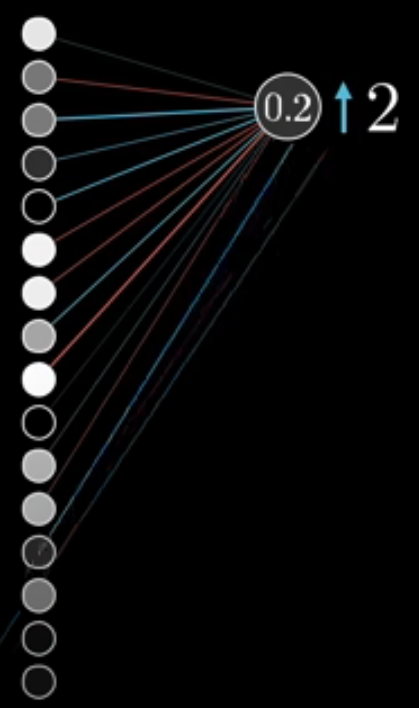
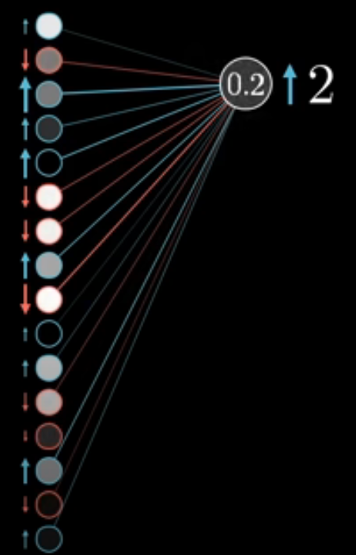
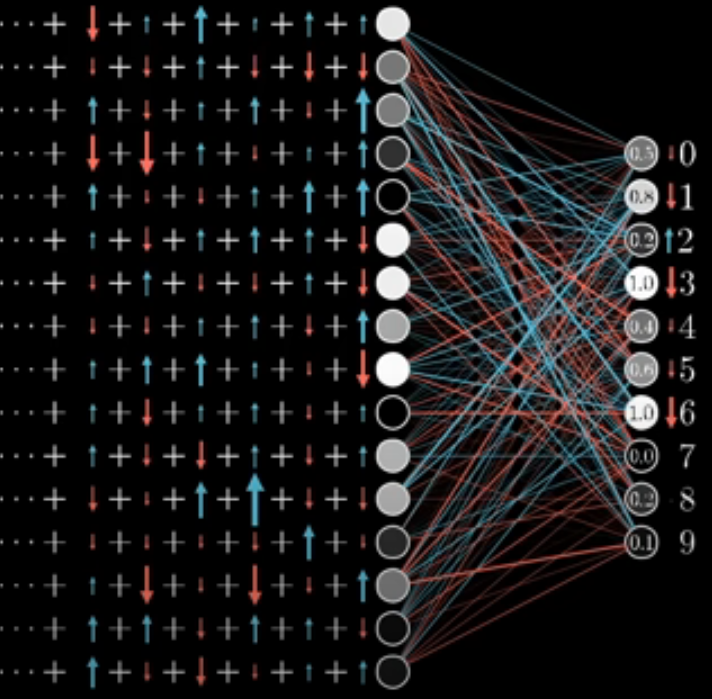

What is backpropagation?
Now that we’ve explored how adjusting weights and biases affects the loss function, it’s time to delve into how neural networks systematically learn these optimal parameters. This is where the backpropagation algorithm comes into play.
Backpropagation, short for “backward propagation of errors,” is a fundamental algorithm used to train neural networks. It efficiently computes the gradient of the loss function with respect to each parameter (weights and biases) in the network. These gradients indicate the direction and rate at which each parameter should be adjusted to minimize the loss.
This process is repeated iteratively, allowing the network to learn the optimal parameters that minimize the loss function.
Backpropogation, step-by-step
Let’s say we have our iris dataset and recall we were trying to sort out data points into one of three classes: ‘setosa’, ‘versicolor’ or ‘virginica’, which meant our output layer had three neurons in which represented the probability our network would put a data point into each one of those classes. In an ideal world, the output layer would have a value of \(1\) for the correct class and \(0\) for the other two, meaning that it was perfectly confident (and correct)!
1. Forward Pass
First we do a forward pass with our training data to compute some predictions and use our loss function (in our case, mean squared error) to measure how far the predictions are from the true labels.

2. Gradient descent
We then look at an output layer and work out how much we want our output layer to change, based on how far away it is from the right answer. Essentially, we want the value for the correct/true output to go up towards \(1\) and we want the other values to reduce towards \(0\). The further we are away from that ideal, the larger the change we want.
But how do we change those values? Well the values of neurons in a layer depend on the values of all the neurons in the previous layer and the weights and biases of those neurons. We understood previously that: Changing your weights and biases in your neural network will change your error and so we can use a tool from calculus called the chain rule to calculate the gradient of the loss function with respect to these weights and biases.
(If you’re not familiar with the chain rule, don’t worry, you could watch a video series like 3Blue1Brown’s Essenece of Calculus to build a general intuition about what’s going on!)
We can then use gradient descent to nudge the weights and biases of our penultimate layer in such a way to reduce the value of the loss function at our output layer.

3. Propogation
Once we have done this, we can then propogate this process back through the other layers! We know what value we want our penulatimate layer to be in order to minimise loss, so we now want to updates the weights and biases of each layer in the network to keep reducing our loss function.

4. Test the neural network
Once we have done this for all of our training data, we can run our seperate, test data through the neural network and evaluate our test loss to see how well our neural network generalises to data it hasn’t been trained on!
5. Repeat
We do this process many times (many epochs) until our test loss is sufficiently low!
For a fun visualise of a neural network training (and the associated decision boundary warping around points), you can have a play with the Tensorflow Playground.
For some video explainers of all the theory in this course, including multi-layer perceptrons, gradient descent and back propogation (both intuitively and with some mathematical rigour), we recommend 3Blue1Brown’s YouTube Series on Neural Networks. Note this series also includes contents on Transformers and Large Language Models which are not covered in this course!